Réponds en une ligne, par exemple « 1A 2A 3A 5A, bord : bien ».
Q-1 · Le cadre ne tombe pas sur ses graduations
Le cadre reste fixe au milieu (ta règle R4 : les deux bouts toujours visibles). Les graduations, elles, s'étalent sur toute la largeur.
·Aujourd'hui, tour 11
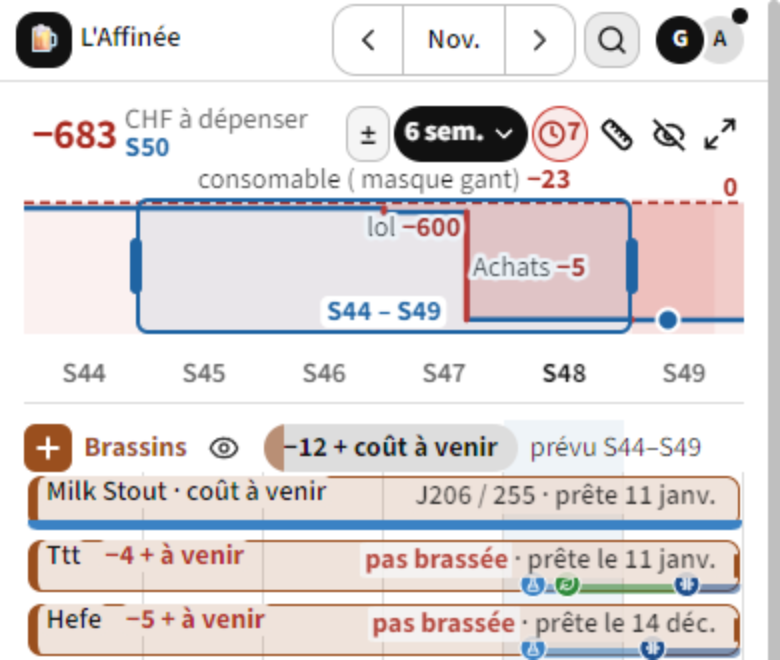
Cadre « S44 – S49 », mais S44 et S49 tombent hors du cadre.
AGraduations sur la courbe recommandé
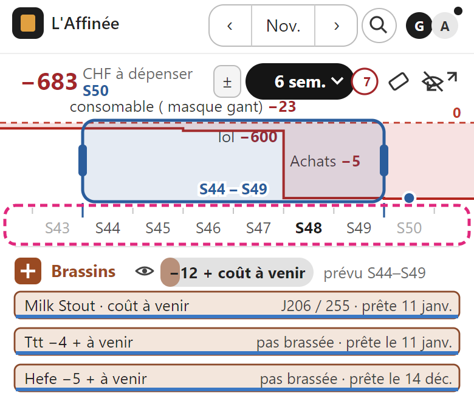
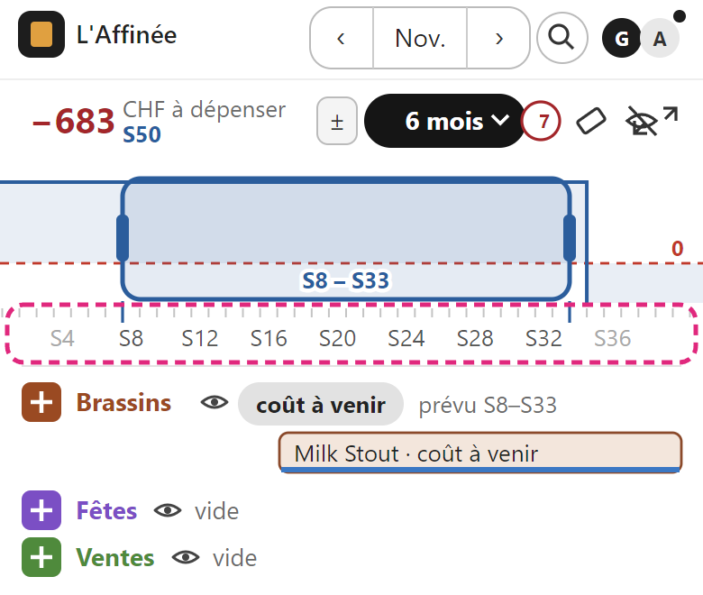
Ce qui change : le cadre couvre exactement S44 à S49 ; les semaines d'avant et d'après, en gris, dans les marges. À 6 mois, une graduation toutes les 4 semaines.
BCadre pleine largeur
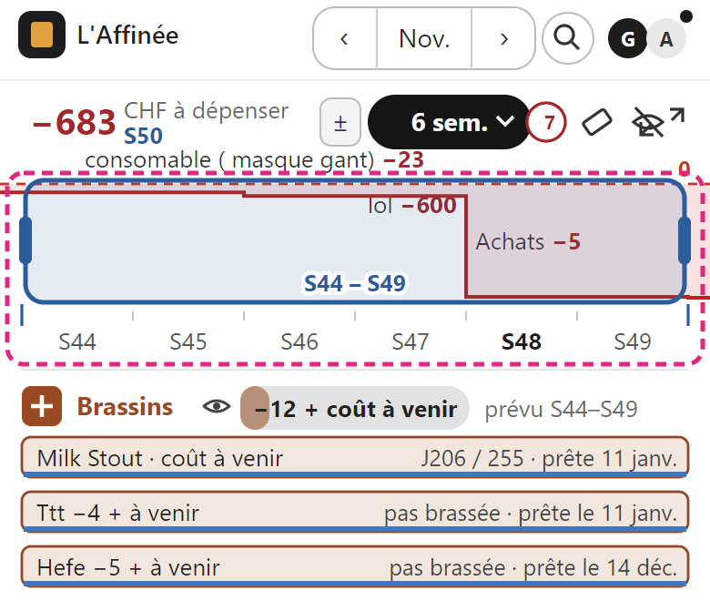
Ce qui change : plus de marges. On ne voit plus ce qui précède ni ce qui suit ; les poignées touchent le bord de l'écran.
C« Aligner » allumé d'office
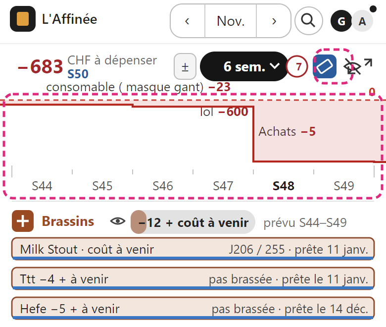
Ce qui change : courbe et graduations d'accord, mais le cadre disparaît (il faudrait le redessiner).
·Aujourd'hui à 6 mois
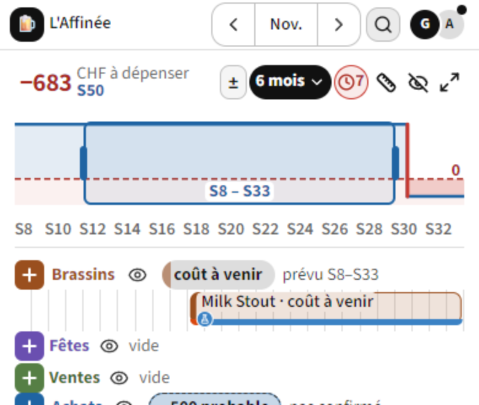
Cadre « S8 – S33 », graduations S8 à S32 sur toute la largeur : à comparer avec A à 6 mois.
Q-2 · Doigt posé sur la courbe hors du cadre, puis glissé
Lire la semaine, ou faire défiler vers le passé ? Dessiné avec Q-1 A.
·Aujourd'hui (capture du tour 10)
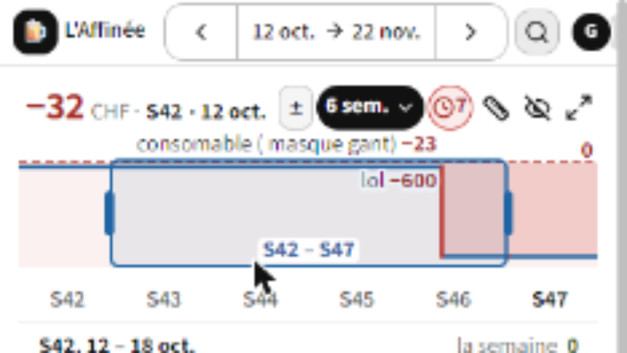
La pastille lit la semaine touchée (« S42, 12 → 18 oct. ») ; la fenêtre ne bouge pas. Geste non changé depuis.
ALire la semaine recommandé
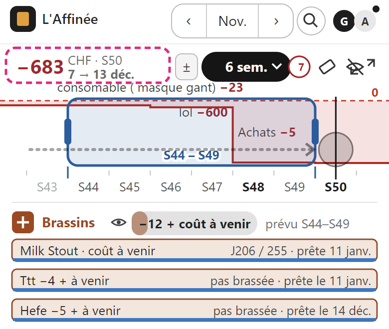
Ce qui change : rien. La pastille dit la semaine sous le doigt (S50, 7 → 13 déc.) ; pour reculer, on tire le cadre au bord.
BDéfiler
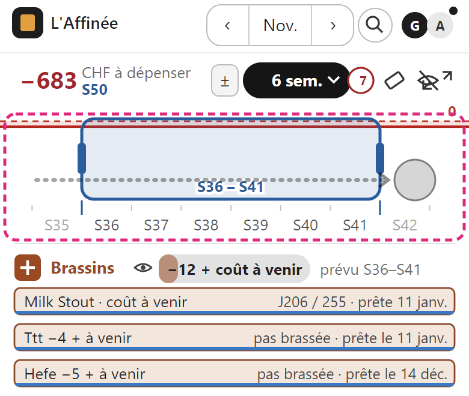
Ce qui change : la frise suit le doigt, le passé arrive par la gauche (ici 8 semaines plus tôt, S36 – S41). Plus de lecture hors du cadre.
Q-3 · La pastille « −683 CHF à dépenser · S50 »
Le creux de ce que montre le cadre, ou de tout l'horizon ? Ta règle : « pastille = ce que montre le cadre ».
·Aujourd'hui, tour 11
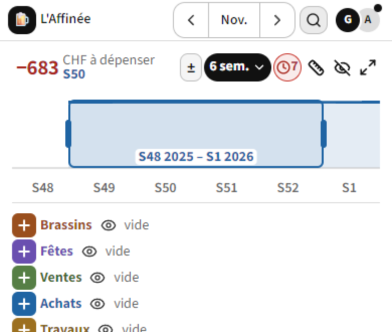
Cadre à la butée, S48 2025 – S1 2026, rien dedans : la pastille dit toujours −683 en S50.
ACreux du cadre recommandé
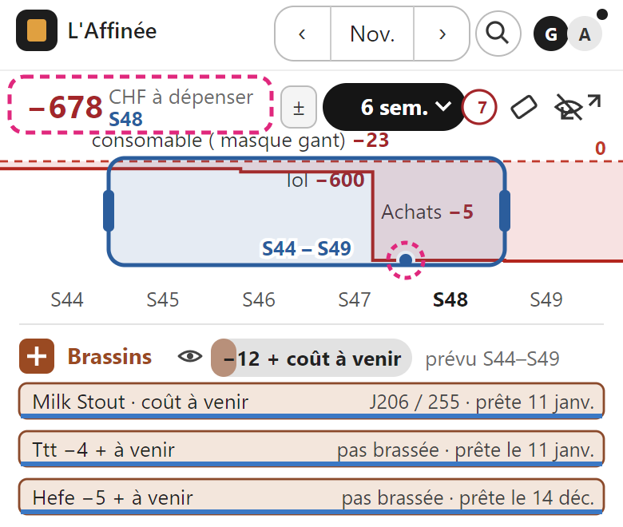
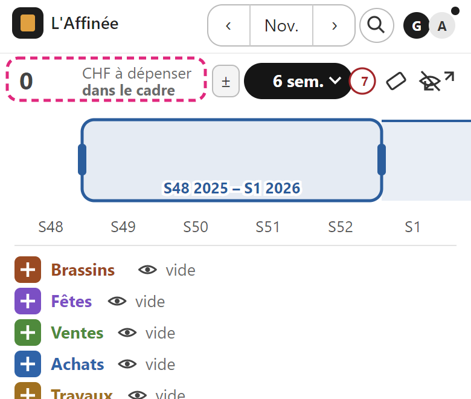
Ce qui change : chiffre et semaine suivent le cadre. En 6 sem., le creux de S44 – S49 (−678, montant d'exemple) ; à la butée, 0.
BCreux de l'horizon
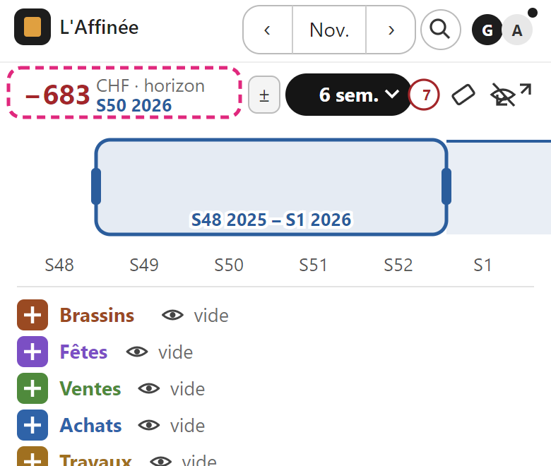
Ce qui change : « horizon » et l'année écrits à l'écran ; le chiffre ne bouge pas au geste.
Q-5 · Période écrite deux fois
« S44 – S49 » sur le cadre, puis S44 … S49 juste dessous. Dessiné avec Q-1 A.
·Aujourd'hui, tour 11
Le cadre et les graduations disent les mêmes semaines.
ADates sur le cadre recommandé
Ce qui change : le cadre dit les dates (« 26 oct. – 6 déc. »), les graduations les semaines. Chaque chose une fois.
BGraduations muettes sous le cadre
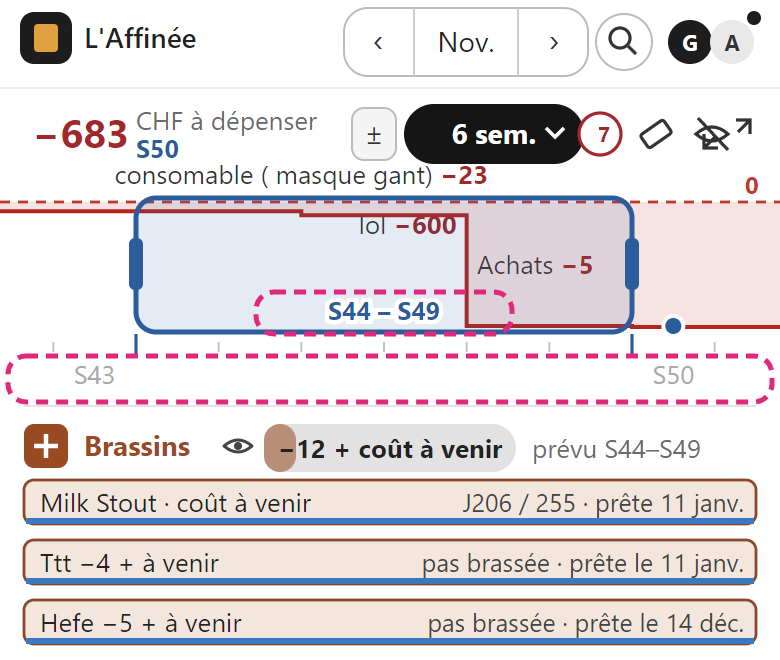
Ce qui change : le cadre dit « S44 – S49 » ; dessous, seuls les traits. S43 et S50 restent dans les marges.
CGarder les deux
Ce qui change : rien ; la règle « une seule fois » ne vaudrait que pour 1 semaine.
Q-4 · Vitesse du défilement au bord
À essayer sur ton téléphone : 36 semaines en 3 s au bord ; plus lent / bien / plus rapide.
Montants de la courbe repris des captures (−23, −600, −5, −683) ; les montants intermédiaires sont d'exemple. Sources : LISTE.md § 5, contre-épreuve T11-8 à T11-10.